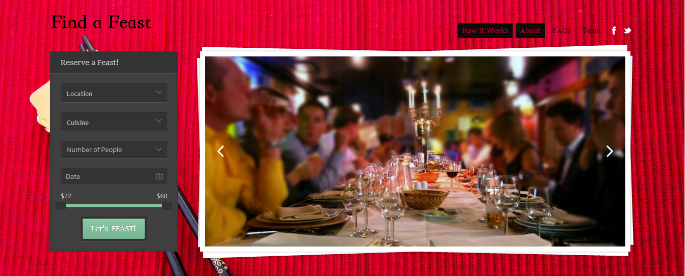
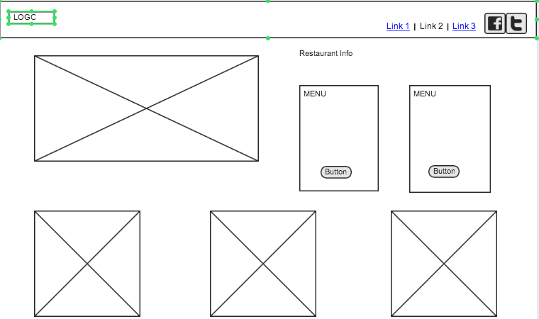
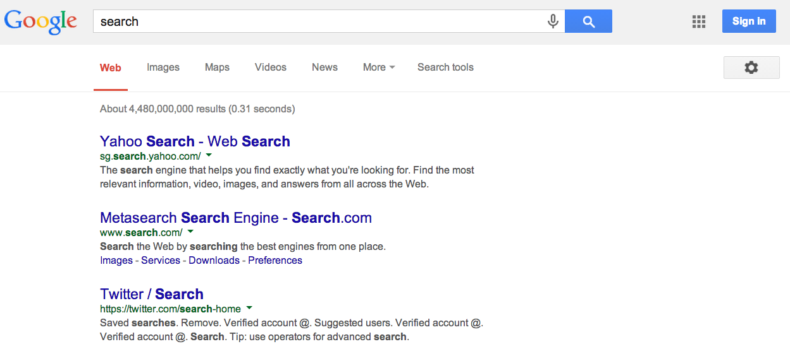
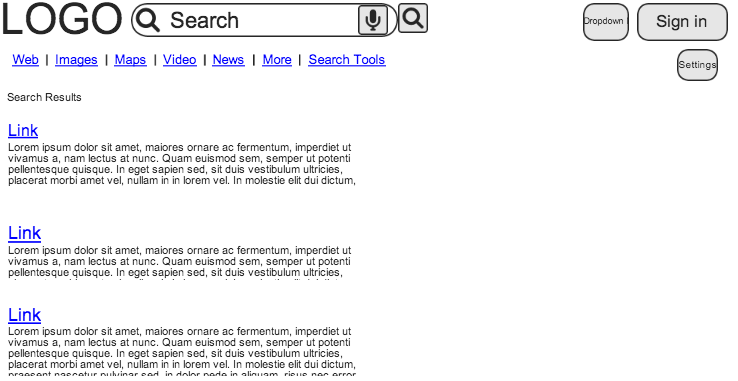

![]()

This site contains a lot of information and they convey it in a simple yet elegant way. The problem that the designers deal with is that each customer has different priorities. For some people price is the most important, for others the location matters most. They have many filters that allow the users to customize their seach. On top of that they provide easy ways to view the info such as an interactive map.
 This is a site that I developed a few months ago using wordpress. I did not use a wireframe when I designed it. I did list out the features that I wanted to have on each page and used that as a guide to build the site. I wanted it to be a fast and easy way for people to book events. My priority was that it would look nice on mobile too. I wanted it to convey to the users a clear idea for the venue and the food. I chose to put in lots of photos and created an easy to use search feature.
 This is another great example of how to make massive amounts of information easy to process. The main value proposition of Google is that users can find exactly what they are looking for. Their algorithm definately helps but the user interface is also so clean and easy to use. Many of their complex features are accessed through links that are organized and out of the way. They provide a few different tools so that users can filter and customize their search results. I also like how the page has lots of white space, just like their homepage.